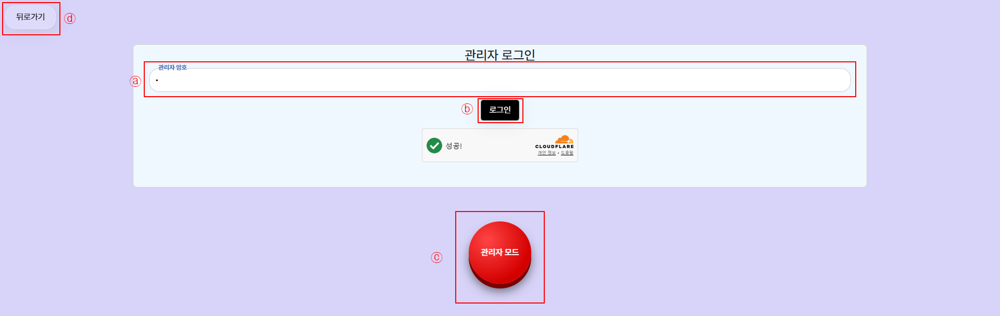

ⓐ 공지글(Notice): "오늘 하루 그만보기"로 오늘 하루 안보도록 가능
ⓑ 톱니바퀴: 표시기 "show"로 랜덤으로 나오는 나만의 펫을 소환가능! "hide"로 나만의 펫을 사라지게 가능
ⓒ 게시글 표시형식: 왼쪽모드는 게시글이 불규칙적으로 모여있는 효과, 오른쪽모드는 게시글이 좌우 스크롤이 가능한 효과
ⓓ 메뉴바: 사이드바로 숨겨진 기능의 설명, 숨겨진게임, 라이트/다크모드 설정으로 24시간 거주가능
ⓔ 픽셀 아이콘: 표시기 "show"를 눌러서 나만의 펫 먹방가능!!

ⓐ비밀번호: 입력하면 신기한 버튼을 볼 수 있음
ⓑ로그인: 비밀번호를 입력하지 않으면 신기한 버튼을 볼 수 없는 대신 버튼을 누르면 버튼이 아무곳이나 이동 될수있음
ⓒ관리자 모드: 비밀번호를 누르면 나타나는 신기한 버튼으로 index페이지로 돌아감
ⓓ뒤로가기: 누르면 click페이지로 돌아감